library(tidyverse)
library(brms)
library(tidybayes)
library(ggdist)
NoteContinuing from last week
ImportantHow to work through this lab
You will explore distributions, model checking, and priors using brms.
- Read and run through each code chunk, making sure you understand what it does before moving on.
- Some questions have a hidden answer you can reveal after writing your own response. These cover concepts that later questions build on, so check your understanding before moving on.
- Other questions are open: no answer is provided. By that point, the walkthrough has given you enough context to reason through them on your own.
- Write your responses in the code chunks marked
# Enter your answer here(use R comments for text answers). For coding exercises, write your code in chunks marked# Enter your code here.
Part 3: Distributions all the way down
In Part 1, you explored the data and fit models with lm() and brm() (using default priors). You also drew posterior samples. Now we continue with distributions and priors.
Setup
Packages and data
We want the same data set up as in the last lab.
Code
# load the penguins data
data(penguins, package = "palmerpenguins")
# subset the data
chinstrap <- penguins %>%
filter(species == "Chinstrap")
glimpse(chinstrap)Rows: 68
Columns: 8
$ species <fct> Chinstrap, Chinstrap, Chinstrap, Chinstrap, Chinstra…
$ island <fct> Dream, Dream, Dream, Dream, Dream, Dream, Dream, Dre…
$ bill_length_mm <dbl> 46.5, 50.0, 51.3, 45.4, 52.7, 45.2, 46.1, 51.3, 46.0…
$ bill_depth_mm <dbl> 17.9, 19.5, 19.2, 18.7, 19.8, 17.8, 18.2, 18.2, 18.9…
$ flipper_length_mm <int> 192, 196, 193, 188, 197, 198, 178, 197, 195, 198, 19…
$ body_mass_g <int> 3500, 3900, 3650, 3525, 3725, 3950, 3250, 3750, 4150…
$ sex <fct> female, male, male, female, male, female, female, ma…
$ year <int> 2007, 2007, 2007, 2007, 2007, 2007, 2007, 2007, 2007…Models
Once again, we’ll fit the model
\[ \begin{align} \text{bill\_length\_mm}_i & = \beta_0 + \beta_1 \text{body\_mass\_g}_i + \epsilon_i \\ \epsilon_i & \sim \operatorname{Normal}(0, \sigma_\epsilon) , \end{align} \]
with both lm() and brm().
Code
# OLS
fit1.ols <- lm(
data = chinstrap,
bill_length_mm ~ 1 + body_mass_g
)
# Bayes
fit1.b <- brm(
data = chinstrap,
bill_length_mm ~ 1 + body_mass_g
)Bayesians have many kinds of distributions
In Bayesian statistics, we have at least 6 distributions to keep track of. Those are:
- the likelihood distributions
- the prior parameter distribution (aka priors)
- the prior predictive distributions
- the posterior parameter distributions (aka posteriors)
- the posterior-predictive distribution
In many respect, it’s distributions ‘all the way down,’ with Bayesians. This can indeed be difficult to keep track of at first. But since this is true for any class of Bayesian models (not just regression), you’ll hopefully get used to it.
Question 3.1
Fill in the blanks using \(\theta\), \(D\), and \(\mid\) (the conditioning bar):
Tip
The conditioning bar \(\mid\) means “given.” Think about which quantity you know and which you’re trying to learn about.
| Distribution | Notation (fill in the blank) |
|---|---|
| Likelihood | \(P()\) |
| Prior | \(P()\) |
| Prior predictive | \(P()\) |
| Posterior | \(P()\) |
| Posterior predictive | \(P()\) |
TipAnswer
| Distribution | Notation |
|---|---|
| Likelihood | \(P(D \mid \theta)\) |
| Prior | \(P(\theta)\) |
| Prior predictive | \(P(D)\) |
| Posterior | \(P(\theta \mid D)\) |
| Posterior predictive | \(P(D_{\text{new}} \mid D)\) |
We also have some other distributions that follow from these. For example, - the distributions of the model expectations (i.e., the predicted means)
Likelihood distributions.
We are approaching Bayesian statistics from a likelihood-based perspective. That is, we situate regression models within the greater context of a likelihood function. (There are ways to do non-parametric Bayesian statistics, which don’t focus on likelihoods. We won’t get into that right now.)
So far, we have been using the conventional Gaussian likelihood. If we have some variable \(y\), we can express it as normally distributed by
\[ \operatorname{Normal}(y \mid \mu, \sigma) = \frac{1}{\sqrt{2 \pi \sigma}} \exp \left( \frac{1}{2} \left( \frac{y - \mu}{\sigma}\right)^2\right), \]
where \(\mu\) is the mean and \(\sigma\) is the standard deviation. With this likelihood,
- \(\mu \in \mathbb R\)
- the mean can be any real number, ranging from \(-\infty\) to \(\infty\)
- \(\sigma \in \mathbb R_{> 0}\)
- the standard deviation can take on any real number greater than zero.
It’s also the assumption
- \(y \in \mathbb R\)
- the focal variable \(y\) can be any real number, ranging from \(-\infty\) to \(\infty\).
One of the ways we wrote our model formula back in the first file was
\[ \begin{align} \text{bill\_length\_mm}_i & \sim \operatorname{Normal}(\mu_i, \sigma) \\ \mu_i & = \beta_0 + \beta_1 \text{body\_mass\_g}_i, \end{align} \]
and further in the discussion, we updated that equation with the posterior means for our three parameters to
\[ \begin{align} \text{bill\_length\_mm}_i & \sim \operatorname{Normal}(\mu_i, 2.92) \\ \mu_i & = 32.2 + 0.004 \text{body\_mass\_g}_i. \end{align} \]
Before we get into this, though, let’s back up and consider an intercept-only model of the form
\[ \begin{align} \text{bill\_length\_mm}_i & \sim \operatorname{Normal}(\mu_i, \sigma) \\ \mu_i & = \beta_0 , \end{align} \]
where there is no predictor variable. Here’s how to fit the model with brm().
Code
# Bayes
fit0.b <- brm(
data = chinstrap,
bill_length_mm ~ 1
)Let’s look at the model summary.
Code
summary(fit0.b) Family: gaussian
Links: mu = identity
Formula: bill_length_mm ~ 1
Data: chinstrap (Number of observations: 68)
Draws: 4 chains, each with iter = 2000; warmup = 1000; thin = 1;
total post-warmup draws = 4000
Regression Coefficients:
Estimate Est.Error l-95% CI u-95% CI Rhat Bulk_ESS Tail_ESS
Intercept 48.84 0.41 48.05 49.65 1.00 3127 2435
Further Distributional Parameters:
Estimate Est.Error l-95% CI u-95% CI Rhat Bulk_ESS Tail_ESS
sigma 3.38 0.28 2.88 3.99 1.00 3135 2644
Draws were sampled using sampling(NUTS). For each parameter, Bulk_ESS
and Tail_ESS are effective sample size measures, and Rhat is the potential
scale reduction factor on split chains (at convergence, Rhat = 1).The intercept parameter \(\beta_0\) is a stand-in for \(\mu\). The \(\sigma\) parameter is just \(\sigma\). Here they are in a plot.
Code
draws <- as_draws_df(fit0.b)
draws %>%
rename(`beta[0]==mu` = b_Intercept) %>%
pivot_longer(`beta[0]==mu`:sigma, names_to = "parameter") %>%
ggplot(aes(x = value)) +
stat_halfeye(.width = .95, normalize = "panels") +
scale_y_continuous(NULL, breaks = NULL) +
xlab("parameter space") +
facet_wrap(~ parameter, scales = "free", labeller = label_parsed)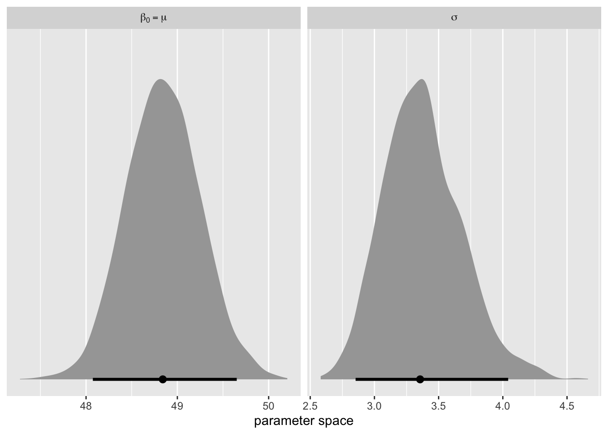
Here are the posterior means for those two parameters.
Code
mu <- mean(draws$b_Intercept)
sigma <- mean(draws$sigma)
mu; sigma[1] 48.83877[1] 3.376664We can use dnorm() to compute the shape of \(\operatorname{Normal}(48.8, 3.4)\).
Code
tibble(y = seq(from = 30, to = 70, by = 0.1)) %>%
mutate(density = dnorm(x = y, mean = mu, sd = sigma)) %>%
ggplot(aes(x = y, y = density)) +
geom_line() +
xlab("bill_length_mm")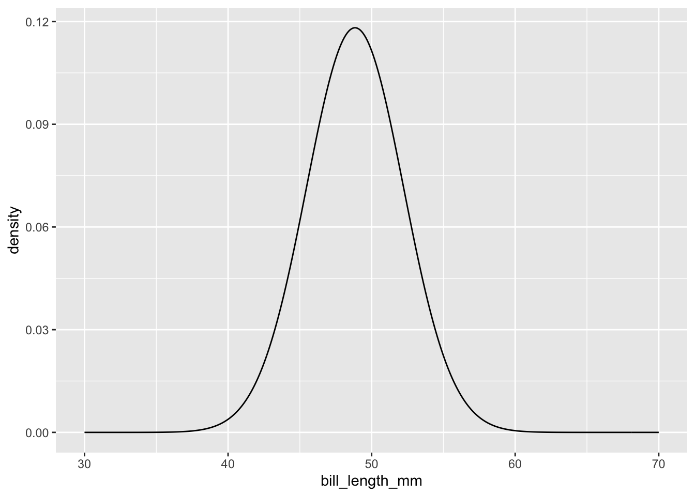
We can compare this to the sample distribution of the bill_length_mm data:
Code
chinstrap %>%
ggplot(aes(x = bill_length_mm)) +
geom_histogram(aes(y = after_stat(density)),
binwidth = 2.5) +
geom_line(data = tibble(bill_length_mm = seq(from = 30, to = 70, by = 0.1)),
aes(y = dnorm(x = bill_length_mm, mean = mu, sd = sigma)),
color = "red")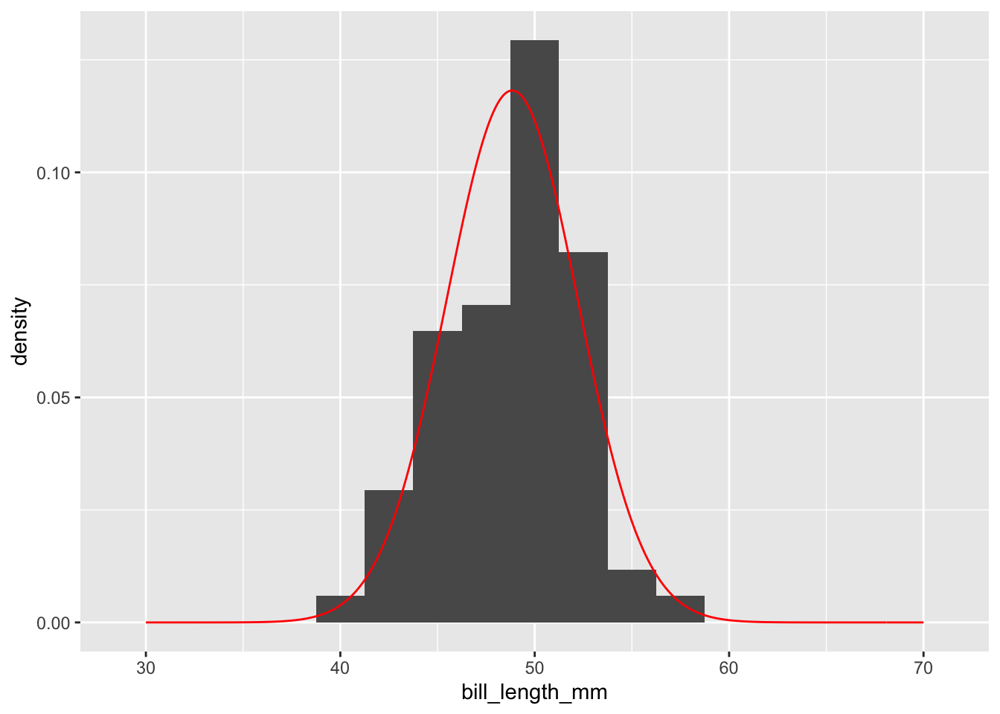
It’s not a great fit, but not horrible either.
Question 3.2
The red curve is the model’s best guess at the distribution of bill_length_mm. What does this model get right? What does it miss?
Tip
Think about what a single Normal curve can and can’t capture. Also: this model has no predictor.
Code
# Enter your answer hereNow let’s see what this means for our univariable model fit1.b. First, let’s learn about the posterior_summary() function, which we’ll use to save a few posterior means.
Code
posterior_summary(fit1.b) Estimate Est.Error Q2.5 Q97.5
b_Intercept 3.219020e+01 3.4991437422 2.520195e+01 3.902057e+01
b_body_mass_g 4.460538e-03 0.0009337018 2.630735e-03 6.314249e-03
sigma 2.924427e+00 0.2562101322 2.467389e+00 3.486101e+00
Intercept 4.884178e+01 0.3557498901 4.817866e+01 4.953159e+01
lprior -4.298329e+00 0.0687981373 -4.449870e+00 -4.181116e+00
lp__ -1.723218e+02 1.2099861347 -1.754015e+02 -1.709036e+02Code
b0 <- posterior_summary(fit1.b)[1, 1]
b1 <- posterior_summary(fit1.b)[2, 1]
sigma <- posterior_summary(fit1.b)[3, 1]Now we plot.
Code
crossing(body_mass_g = seq(from = 2500, to = 5000, length.out = 200),
bill_length_mm = seq(from = 35, to = 60, length.out = 200)) %>%
mutate(density = dnorm(x = bill_length_mm,
mean = b0 + b1 * body_mass_g,
sd = sigma)) %>%
ggplot(aes(x = body_mass_g, y = bill_length_mm)) +
geom_raster(aes(fill = density),
interpolate = TRUE) +
geom_point(data = chinstrap,
shape = 21, color = "white", fill = "black", stroke = 1/4) +
scale_fill_viridis_c(option = "A", begin = .15, limits = c(0, NA)) +
coord_cartesian(xlim = range(chinstrap$body_mass_g),
ylim = range(chinstrap$bill_length_mm))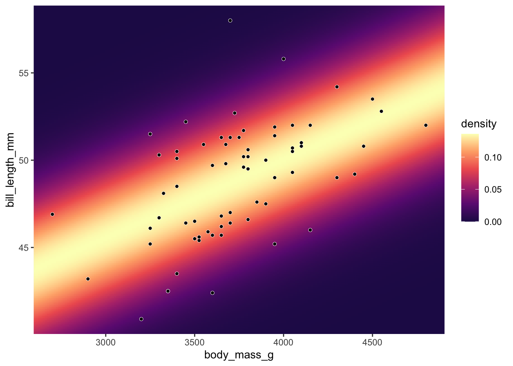
Our univariable model fit1.b can be viewed as something like a 3-dimensional Gaussian hill.
Prior distributions & Prior predictive distributions.
Let’s hold off on this for a bit.
Parameter distributions.
Up above, we plotted the posterior distributions for our intercept-only fit0.b model. Here they are again.
Code
draws %>%
rename(`beta[0]==mu` = b_Intercept) %>%
pivot_longer(`beta[0]==mu`:sigma, names_to = "parameter") %>%
ggplot(aes(x = value)) +
stat_halfeye(.width = .99, normalize = "panels",
# customize some of the aesthetics
fill = "lightskyblue1", color = "royalblue",
point_color = "darkorchid4", point_size = 4, shape = 15) +
scale_y_continuous(NULL, breaks = NULL) +
labs(title = "fit0.b",
subtitle = "This time we used 99% intervals, and got silly with the colors.",
x = "parameter space") +
facet_wrap(~ parameter, scales = "free", labeller = label_parsed)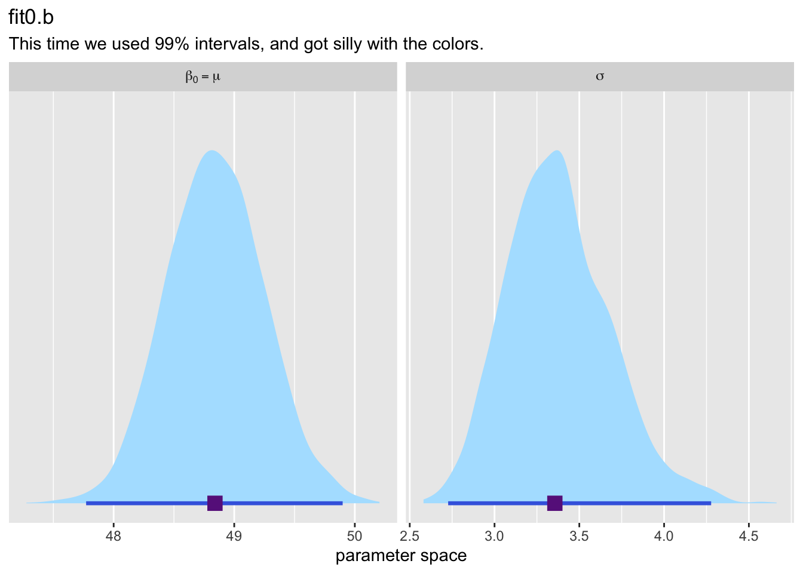
We might practice making a similar plot for our univariable model fit1.b.
Code
as_draws_df(fit1.b) %>%
rename(`beta[0]` = b_Intercept,
`beta[1]` = b_body_mass_g) %>%
pivot_longer(cols = c(`beta[0]`, `beta[1]`, sigma),
names_to = "parameter") %>%
ggplot(aes(x = value)) +
stat_histinterval(.width = .95, normalize = "panels") +
scale_y_continuous(NULL, breaks = NULL) +
labs(title = "fit1.b",
subtitle = "Using good old 95% intervals, but switching to histograms",
x = "parameter space") +
facet_wrap(~ parameter, scales = "free", labeller = label_parsed)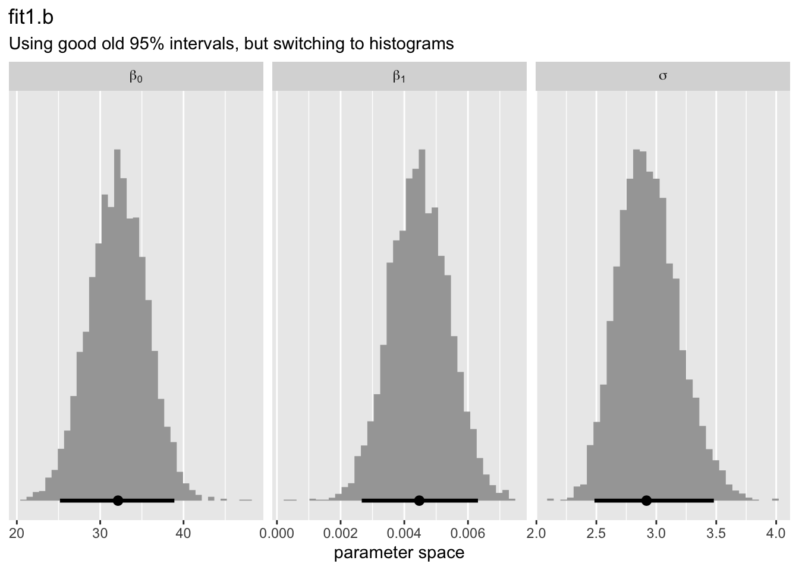
Some authors, like John Kruschke, have a strong preference for plotting their posteriors with histograms, rather than density plots.
Distributions of the model expectations.
Take another look at the conditional_effects() plot from earlier.
Code
conditional_effects(fit1.b) %>%
plot(points = TRUE)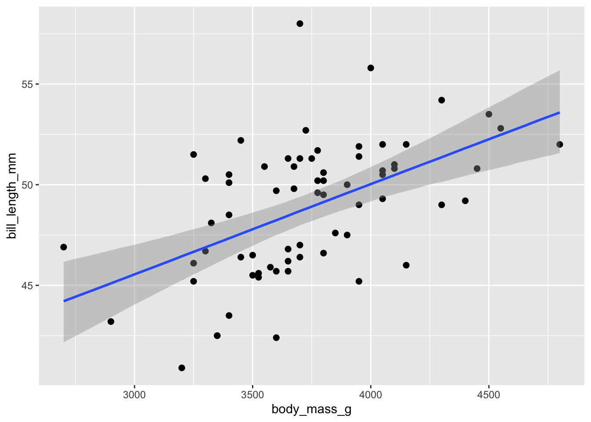
The blue line is the posterior mean, for the \(\mu_i\), the model-based mean for bill_length_mm, given the value for the predictor body_mass_g. The semitransparent gray ribbon marks the percentile-based interval for the conditional mean.
We can make a similar plot with the fitted() function. First we’ll need a predictor grid, we’ll call nd.
Code
nd <- tibble(body_mass_g = seq(
from = min(chinstrap$body_mass_g),
to = max(chinstrap$body_mass_g),
length.out = 100))
glimpse(nd)Rows: 100
Columns: 1
$ body_mass_g <dbl> 2700.000, 2721.212, 2742.424, 2763.636, 2784.848, 2806.061…Now pump nd into the fitted() function.
Code
fitted(fit1.b, newdata = nd) %>%
# subset the first 6 rows
head() Estimate Est.Error Q2.5 Q97.5
[1,] 44.23365 1.0238050 42.14411 46.23851
[2,] 44.32826 1.0052567 42.28035 46.29769
[3,] 44.42288 0.9867573 42.41195 46.35881
[4,] 44.51750 0.9683095 42.54554 46.41911
[5,] 44.61212 0.9499165 42.68544 46.47880
[6,] 44.70673 0.9315813 42.81839 46.53342Now plot.
Code
fitted(fit1.b, newdata = nd) %>%
data.frame() %>%
bind_cols(nd) %>%
ggplot(aes(x = body_mass_g)) +
geom_ribbon(aes(ymin = Q2.5, ymax = Q97.5),
alpha = 1/3) +
geom_line(aes(y = Estimate)) +
# add the data
geom_point(data = chinstrap,
aes(y = bill_length_mm))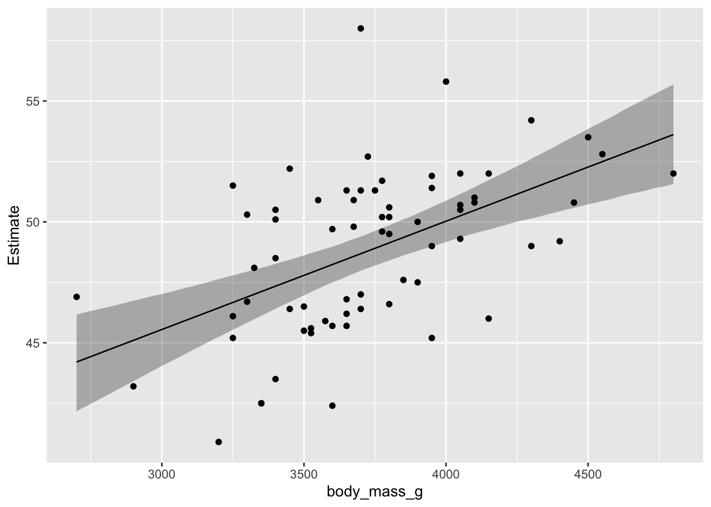
Look what happens if we augment the probs argument in fitted().
Code
fitted(fit1.b,
newdata = nd,
probs = c(.025, .975, .25, .75)) %>%
data.frame() %>%
bind_cols(nd) %>%
ggplot(aes(x = body_mass_g)) +
# 95% range
geom_ribbon(aes(ymin = Q2.5, ymax = Q97.5),
alpha = 1/4) +
# 50% range
geom_ribbon(aes(ymin = Q25, ymax = Q75),
alpha = 1/4) +
geom_line(aes(y = Estimate)) +
geom_point(data = chinstrap,
aes(y = bill_length_mm))Now look what happens if we set summary = FALSE.
Code
fitted(fit1.b,
newdata = nd,
summary = FALSE) %>%
str() num [1:4000, 1:100] 42.5 45.5 44.4 43.6 44.1 ...We get full 4,000 draw posterior distributions for each of the 100 levels of the predictor body_mass_g. Now look at what happens if we wrangle that output a little, and plot with aid from stat_lineribbon() from the ggdist package.
Code
fitted(fit1.b,
newdata = nd,
summary = F) %>%
data.frame() %>%
set_names(pull(nd, body_mass_g)) %>%
mutate(draw = 1:n()) %>%
pivot_longer(-draw) %>%
mutate(body_mass_g = as.double(name)) %>%
ggplot(aes(x = body_mass_g, y = value)) +
stat_lineribbon() +
scale_fill_brewer() +
coord_cartesian(ylim = range(chinstrap$bill_length_mm)) +
theme_classic()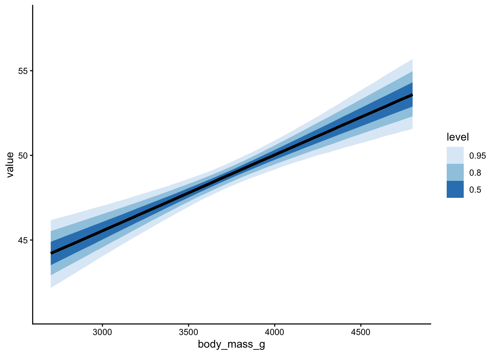
Look what happens when we request more intervals in the .width argument.
Code
fitted(fit1.b,
newdata = nd,
summary = F) %>%
data.frame() %>%
set_names(pull(nd, body_mass_g)) %>%
mutate(draw = 1:n()) %>%
pivot_longer(-draw) %>%
mutate(body_mass_g = as.double(name)) %>%
ggplot(aes(x = body_mass_g, y = value)) +
# make more ribbons
stat_lineribbon(.width = c(.1, .2, .3, .4, .5, .6, .7, .8, .9),
# remove the line
linewidth = 0) +
scale_fill_brewer() +
coord_cartesian(ylim = range(chinstrap$bill_length_mm)) +
theme_classic()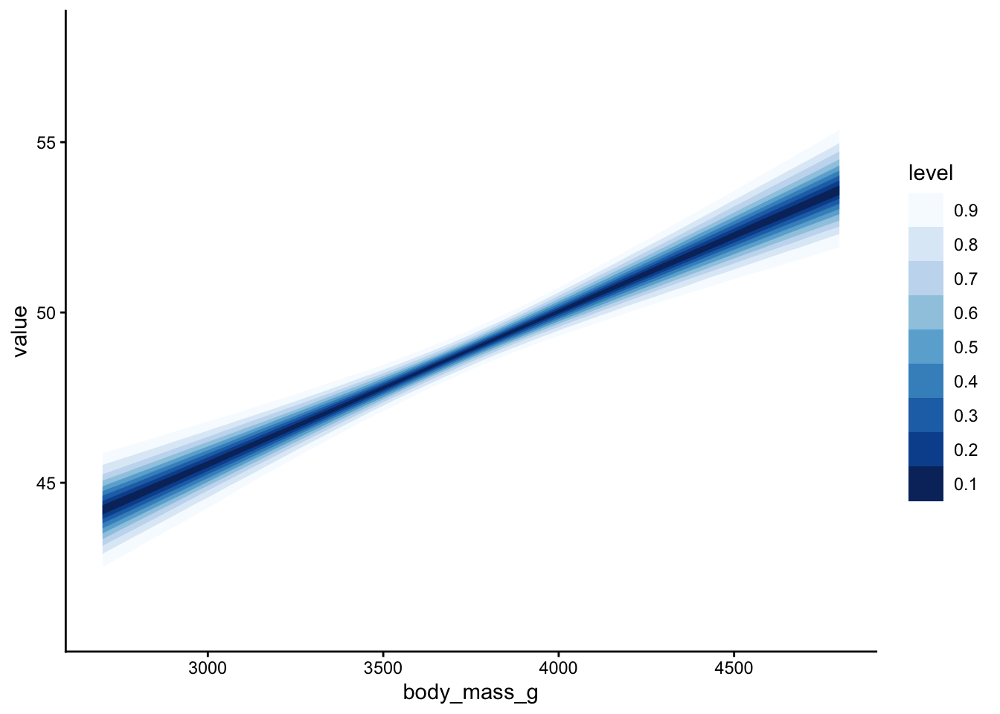
The conditional mean, \(\mu_i\), has its own distribution. We can take this visualization approach even further to make a color gradient.
Code
fitted(fit1.b,
newdata = nd,
summary = F) %>%
data.frame() %>%
set_names(pull(nd, body_mass_g)) %>%
mutate(draw = 1:n()) %>%
pivot_longer(-draw) %>%
mutate(body_mass_g = as.double(name)) %>%
ggplot(aes(x = body_mass_g, y = value, fill = after_stat(.width))) +
# make more ribbons
stat_lineribbon(.width = ppoints(50)) +
scale_fill_distiller(limits = 0:1) +
coord_cartesian(ylim = range(chinstrap$bill_length_mm)) +
theme_classic()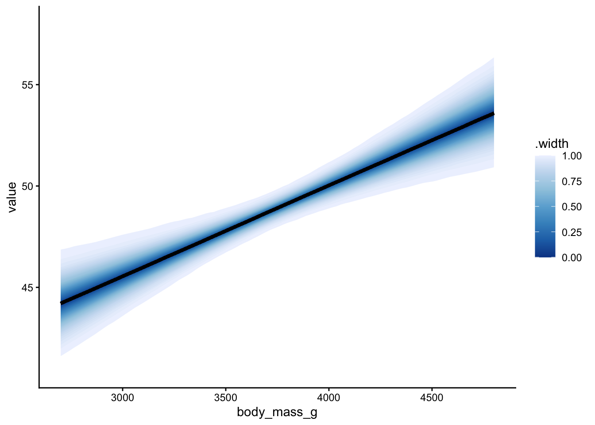
For technical details on this visualization approach, go here: https://mjskay.github.io/ggdist/articles/lineribbon.html#lineribbon-gradients.
The ggdist package even has an experimental visualization approach that’s based on density gradients, rather than interval-width gradients. Since this is experimental, I’m not going to go into the details. But if you’re curious and adventurous, you can learn more here: https://mjskay.github.io/ggdist/articles/lineribbon.html#lineribbon-density-gradients.
Posterior-predictive distributions.
The last section showed the posterior distributions for the model expectations (i.e., the conditional means). In the context of the Gaussian distribution, that’s \(\mu\), or \(\mu_i\) in the case of the univariable model fit1.b. But the whole Gaussian distribution includes \(\mu\) and \(\sigma\).
This is where the predict() function comes in. First, we compare the fitted() output to predict().
Code
fitted(fit1.b, newdata = nd) %>%
# subset the first 6 rows
head() Estimate Est.Error Q2.5 Q97.5
[1,] 44.23365 1.0238050 42.14411 46.23851
[2,] 44.32826 1.0052567 42.28035 46.29769
[3,] 44.42288 0.9867573 42.41195 46.35881
[4,] 44.51750 0.9683095 42.54554 46.41911
[5,] 44.61212 0.9499165 42.68544 46.47880
[6,] 44.70673 0.9315813 42.81839 46.53342Code
predict(fit1.b, newdata = nd) %>%
# subset the first 6 rows
head() Estimate Est.Error Q2.5 Q97.5
[1,] 44.23211 3.102651 38.32178 50.32730
[2,] 44.29920 3.146962 38.24330 50.59841
[3,] 44.42653 3.164127 38.03926 50.64089
[4,] 44.47491 3.117934 38.44270 50.67178
[5,] 44.63282 3.142262 38.56949 50.94807
[6,] 44.75521 3.052955 38.85073 50.99229The posterior means (Estimate) are about the same, but the SD’s (Est.Error) are much larger in the predict() output, and the widths of the 95% intervals are too. Let’s make a plot.
Code
predict(fit1.b, newdata = nd) %>%
data.frame() %>%
bind_cols(nd) %>%
ggplot(aes(x = body_mass_g)) +
geom_ribbon(aes(ymin = Q2.5, ymax = Q97.5),
alpha = 1/3) +
geom_line(aes(y = Estimate)) +
# add the data
geom_point(data = chinstrap,
aes(y = bill_length_mm)) +
coord_cartesian(ylim = range(chinstrap$bill_length_mm))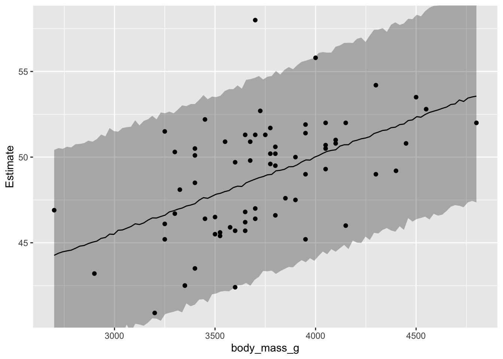
The gray band is the 95% interval for the entire posterior predictive distribution, not just the mean. In a good model, about 95% of the data points should be within those bands.
The jagged edges of the band reflect uncertainty in \(\sigma\), not just the mean.
If we wanted to, we could integrate the fitted()-based conditional posterior mean, with the predict()-based posterior-predictive distribution.
Code
# save the fitted() results
f <- fitted(fit1.b, newdata = nd) %>%
data.frame() %>%
bind_cols(nd)
predict(fit1.b, newdata = nd) %>%
data.frame() %>%
bind_cols(nd) %>%
ggplot(aes(x = body_mass_g)) +
# 95% posterior-predictive range
geom_ribbon(aes(ymin = Q2.5, ymax = Q97.5),
alpha = 1/4) +
# 95% conditional mean range
geom_ribbon(data = f,
aes(ymin = Q2.5, ymax = Q97.5),
alpha = 1/4) +
# posterior mean of the conditional mean
geom_line(data = f,
aes(y = Estimate)) +
# original data
geom_point(data = chinstrap,
aes(y = bill_length_mm)) +
coord_cartesian(ylim = range(chinstrap$bill_length_mm))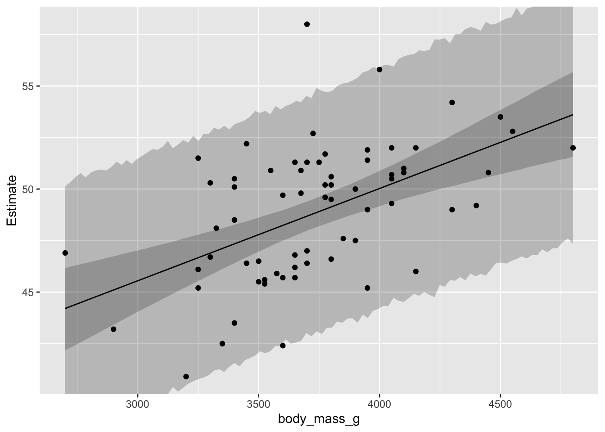
Question 3.3
fitted() gives uncertainty in the mean; predict() gives uncertainty in new observations. In your own words, why is the predict() band always wider? When would you report each one?
Tip
Look at the model equation. fitted() uses only \(\beta_0 + \beta_1 x\). What extra step does predict() add?
Code
# Enter your answer here
TipAnswer
predict() adds a random draw from \(\text{Normal}(0, \sigma)\) on top. Use fitted() for “what’s the average bill length at this body mass?” Use predict() for “where might the next penguin’s bill length fall?”
It’s the posterior predictive distribution that we use to predict new data points. For example, here’s what happens if we use predict() without the newdata argument.
Code
predict(fit1.b) %>%
head() Estimate Est.Error Q2.5 Q97.5
[1,] 47.84228 2.927958 42.12494 53.40081
[2,] 49.54560 2.940014 43.80953 55.38665
[3,] 48.48634 2.989070 42.62021 54.10952
[4,] 47.91161 2.966407 42.09254 53.83108
[5,] 48.77327 2.988233 42.93486 54.70046
[6,] 49.82069 2.952518 43.99991 55.74329We get posterior predictive summaries for each of the original data points. Here’s what happens if we set summary = FALSE.
Code
predict(fit1.b, summary = FALSE) %>%
str() num [1:4000, 1:68] 39.9 47.7 47.5 48.9 44.6 ...
- attr(*, "dimnames")=List of 2
..$ : NULL
..$ : NULLThis time, we got 4,000 posterior draws for each. We can reduce that output with the ndraws argument.
Code
predict(fit1.b, summary = FALSE, ndraws = 6) %>%
str() num [1:6, 1:68] 44.7 51.9 51.6 45.7 45.3 ...
- attr(*, "dimnames")=List of 2
..$ : NULL
..$ : NULLNow wrangle and plot.
Code
set.seed(1)
predict(fit1.b, summary = FALSE, ndraws = 6) %>%
data.frame() %>%
mutate(draw = 1:n()) %>%
pivot_longer(-draw) %>%
mutate(row = str_remove(name, "X") %>% as.double()) %>%
left_join(chinstrap %>%
mutate(row = 1:n()),
by = join_by(row)) %>%
ggplot(aes(x = body_mass_g, y = value)) +
geom_point() +
ylab("bill_length_mm") +
facet_wrap(~ draw, labeller = label_both)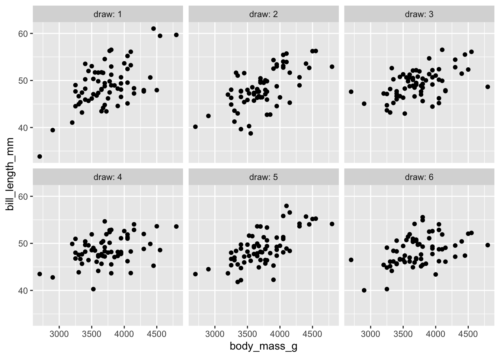
With predict(), we can use the entire posterior-predictive distribution to simulate new data based on the values of our predictor variable(s). To give you a better sense of what’s happening under the hood, here’s an as_draws_df() based alternative.
Code
set.seed(1)
# walk this code through
as_draws_df(fit1.b) %>%
rename(beta0 = b_Intercept,
beta1 = b_body_mass_g) %>%
select(.draw, beta0, beta1, sigma) %>%
slice_sample(n = 6) %>%
expand_grid(chinstrap %>% select(body_mass_g)) %>%
mutate(bill_length_mm = rnorm(n = n(),
mean = beta0 + beta1 * body_mass_g,
sd = sigma)) %>%
ggplot(aes(x = body_mass_g, y = bill_length_mm)) +
geom_point() +
facet_wrap(~ .draw, labeller = label_both)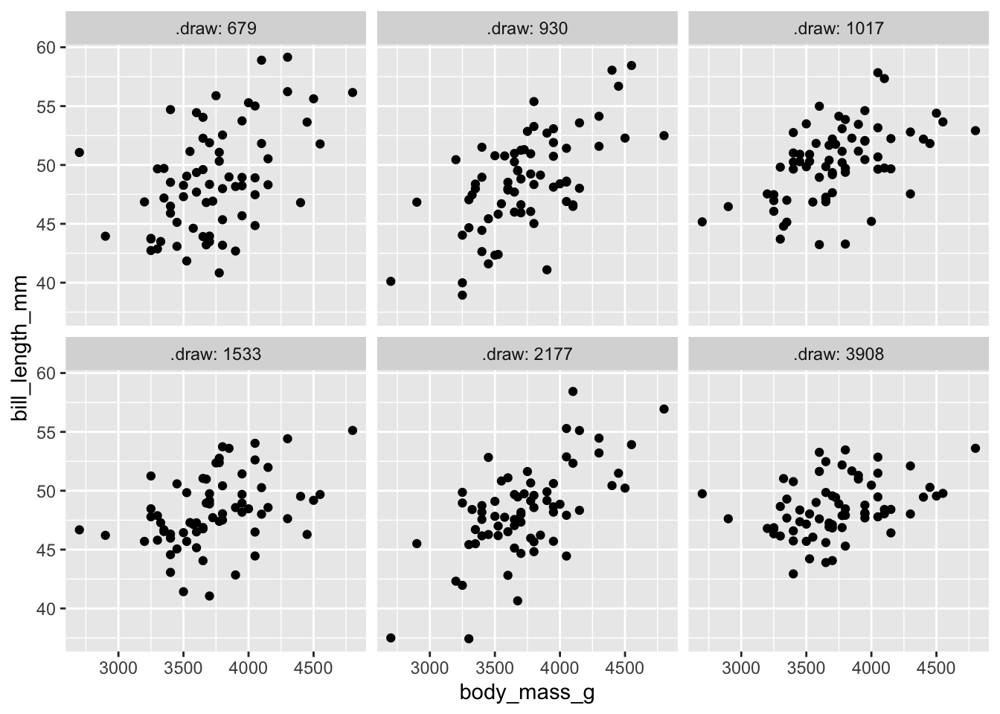
Now take a look at what happens when we plot the densities of several simulated draws.
Code
set.seed(1)
as_draws_df(fit1.b) %>%
rename(beta0 = b_Intercept,
beta1 = b_body_mass_g) %>%
select(.draw, beta0, beta1, sigma) %>%
slice_sample(n = 50) %>% # increase the number of random draws
expand_grid(chinstrap %>% select(body_mass_g)) %>%
mutate(bill_length_mm = rnorm(n = n(),
mean = beta0 + beta1 * body_mass_g,
sd = sigma)) %>%
ggplot(aes(x = bill_length_mm, group = .draw)) +
geom_density(size = 1/4, color = alpha("black", 1/2)) +
coord_cartesian(xlim = range(chinstrap$bill_length_mm) + c(-2, 2))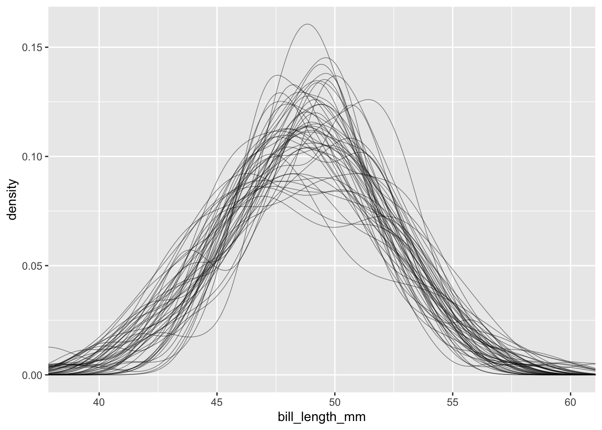
The similarities and differences among the individual density lines give you a sense of the (un)certainty of the posterior-predictive distribution.
Posterior predictive checks with pp_check()
You just did a posterior predictive check by hand — simulating datasets from the posterior and comparing their densities to the observed data. The pp_check() function automates this in one line:
Code
pp_check(fit1.b, ndraws = 100)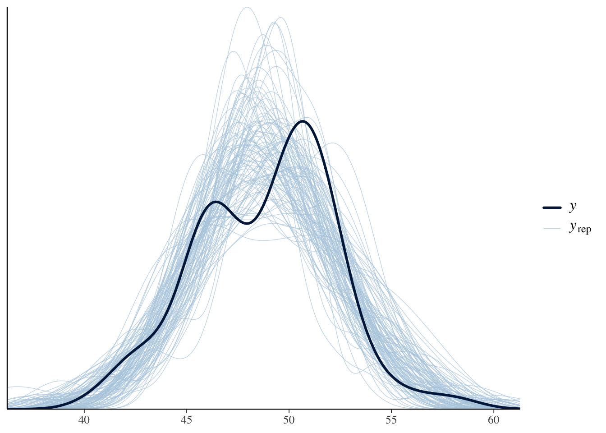
The dark line is the observed data density. The light lines are 100 simulated datasets from the posterior predictive distribution. If the model is good, the light lines should envelope the dark line.
We can also target specific summary statistics:
Code
pp_check(fit1.b, type = "stat", stat = "mean")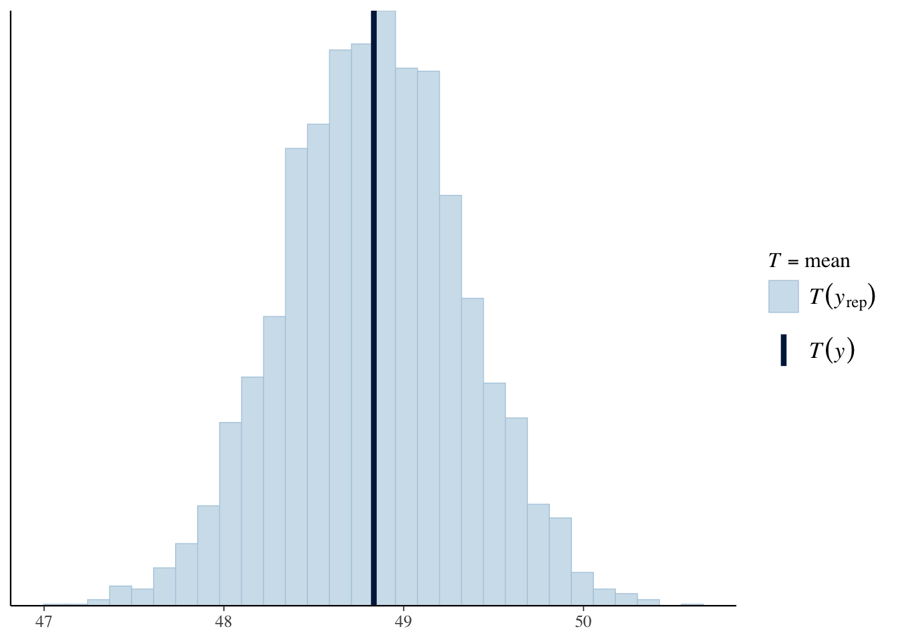
Code
pp_check(fit1.b, type = "stat", stat = "sd")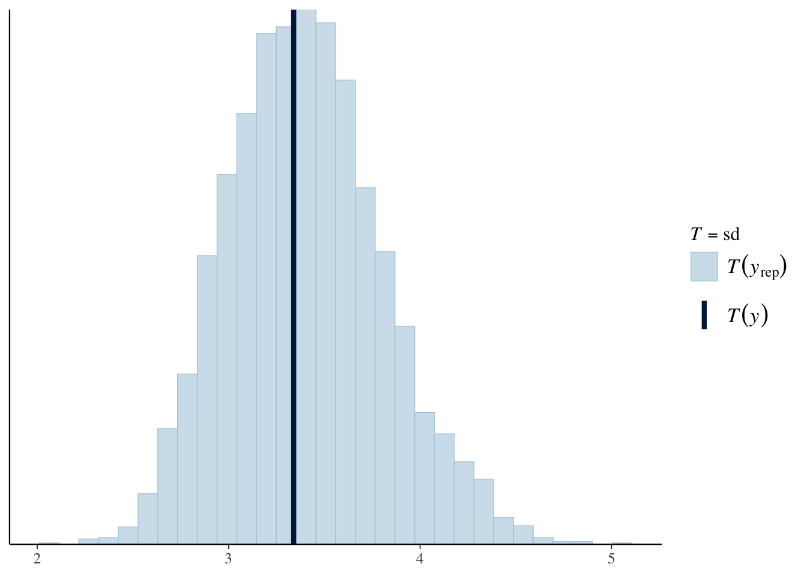
The stat = "mean" check shows a histogram of posterior predictive means, with the observed mean as a vertical line. The stat = "sd" check does the same for spread. These targeted checks isolate whether the model captures specific features of the data.
Question 3.4
Compare the pp_check() output to the manual density overlay you made above. What is pp_check() doing under the hood?
Tip
Look at the dark line and the light lines. You made something very similar a few chunks ago.
Code
# Enter your answer hereThis may be a good time for you to work on Exercise 3 (see end of the document).
Part 4: Beginning to look at priors
Bayes’ rule
Bayes’ theorem will allow us to determine the plausibility of various values of our parameter(s) of interest, \(\theta\), given the data \(d\), which we can express formally as \(\Pr(\theta \mid d)\). Bayes’ rule takes on the form
\[ \Pr(\theta \mid d) = \frac{\Pr(d \mid \theta) \Pr(\theta)}{\Pr(d)}. \]
where
- \(\Pr(d \mid \theta)\) is the likelihood,
- \(\Pr(\theta)\) is the prior,
- \(\Pr(d)\) is the average probability of the data, and
- \(\Pr(\theta \mid d)\) is the posterior.
We can express this in words as
\[ \text{Posterior} = \frac{\text{Probability of the data} \times \text{Prior}}{\text{Average probability of the data}}. \]
The denominator \(\Pr(d)\) is a normalizing constant, and dividing by this constant is what converts the posterior \(\Pr(\theta \mid d)\) into a probability metric.
Prior predictive checks
Every model makes predictions. Most of the time we think about predictions after fitting — but a model with priors is already making predictions before it sees a single data point. If those predictions are absurd, no amount of data will fully rescue the analysis. A quick check now saves you from trusting results that were compromised from the start.
We can do this by fitting the model with sample_prior = "only", which tells brms to ignore the data entirely and just simulate from the priors and likelihood:
Code
fit_prior_only <- brm(
data = chinstrap,
bill_length_mm ~ 1 + body_mass_g,
prior = prior(normal(0, 0.01), class = b),
sample_prior = "only"
)Note: we had to set an explicit prior on the slope (class = b) because the default flat prior can’t be sampled — it spans \(-\infty\) to \(\infty\). We used normal(0, 0.01), which is a reasonable weakly informative prior for this scale.
Now run pp_check() on the prior-only model:
Code
pp_check(fit_prior_only, ndraws = 50)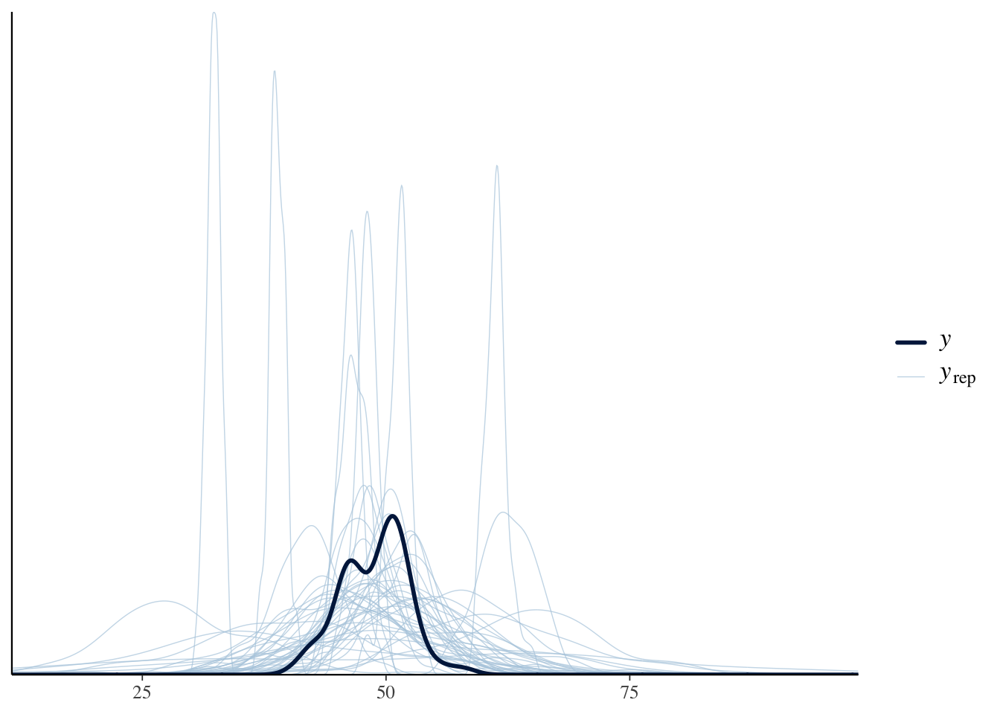
pp_check() overlays your observed data (dark line) as a reference, but the evaluation here is different from a posterior predictive check. The light lines are datasets the model would generate using only the priors — no learning from data at all. You’re not asking “do these match my data?” (priors that already reproduce the data would be suspiciously informative). You’re asking “are these physically plausible for penguin bill lengths?” Predictions in the 30–60 mm range are reasonable. Predictions spanning hundreds of millimeters mean the priors are encoding implausible assumptions.
Question 4.1
The prior predictive check shows data the model would generate before seeing any real data. Do the predictions look reasonable? What would you change if they predicted bill lengths of 500 mm (that’s 50 cm — about the length of your forearm)?
Tip
The dark line is just a scale reference. Ask: could these simulated datasets plausibly be penguin bill measurements? You don’t want the light lines to match the dark line (that would mean your priors are doing the data’s job), but they should be in a biologically sensible range.
Code
# Enter your answer hereDefault priors
To set your priors with brms, the brm() function has a prior argument. If you don’t explicitly use the prior argument, brm() will use default priors. This is what happened with our fit1.b model from above. We used default priors. If you’d like to see what those priors are, execute fit1.b$prior.
Code
# maybe show str(fit1.b)
fit1.b$prior prior class coef group resp dpar nlpar lb ub tag
(flat) b
(flat) b body_mass_g
student_t(3, 49.5, 3.6) Intercept
student_t(3, 0, 3.6) sigma 0
source
default
(vectorized)
default
defaultThus, a fuller expression of our model is
\[ \begin{align} \text{bill\_length\_mm}_i & \sim \operatorname{Normal}(\mu_i, \sigma) \\ \mu_i & = \beta_0 + \beta_1 \text{body\_mass\_g}_i \\ \beta_0 & \sim \operatorname{Student-t}(3, 49.5, 3.6) \\ \beta_1 & \sim \operatorname{Uniform}(-\infty, \infty) \\ \sigma & \sim \operatorname{Student-t}^+(3, 0, 3.6). \end{align} \]
If we had wanted to see the brm() defaults before fitting the model, we could have used the get_prior() function.
Code
get_prior(
data = chinstrap,
bill_length_mm ~ 1 + body_mass_g
) prior class coef group resp dpar nlpar lb ub tag
(flat) b
(flat) b body_mass_g
student_t(3, 49.5, 3.6) Intercept
student_t(3, 0, 3.6) sigma 0
source
default
(vectorized)
default
defaultIf you recall, the normal distribution is a member of the Student-t family, where the \(\nu\) (aka degrees of freedom or normality parameter) is set to \(\infty\). To give you a sense, here are the densities of three members of the Student-t family, with varying \(\nu\) values.
Code
crossing(theta = seq(from = -4.5, to = 4.5, length.out = 200),
nu = c(3, 10, Inf)) %>%
mutate(density = dt(x = theta, df = nu)) %>%
ggplot(aes(x = theta, y = density, color = factor(nu))) +
geom_line(linewidth = 1) +
scale_color_viridis_d(expression(nu), option = "A", end = .7) +
labs(title = "3 members of the Student-t family",
x = expression(theta)) +
coord_cartesian(xlim = c(-4, 4))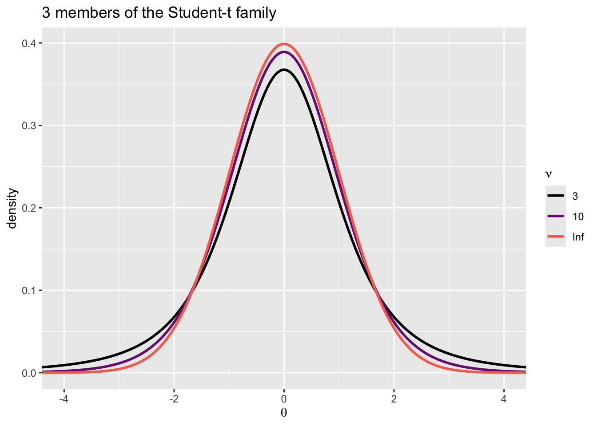
Thus, Student-t distributions have thicker tails when they have smaller \(\nu\) parameters. In the case where \(\nu = 3\), the tails are pretty thick, which means they are more tolerant of more extreme values. And thus priors with small-\(\nu\) parameters will be weaker (i.e., more permissive) than their Gaussian counterparts.
We can visualize functions from ggdist to visualize the default brm() priors. We’ll start with the student_t(3, 49.5, 3.6) \(\beta_0\) prior, and also take the opportunity to compare that with a slightly stronger normal(49.5, 3.6) alternative.
Code
c(prior(student_t(3, 49.5, 3.6)),
prior(normal(49.5, 3.6))) %>%
parse_dist() %>%
ggplot(aes(xdist = .dist_obj, y = prior)) +
stat_halfeye() +
labs(x = expression(italic(p)(beta[0])),
y = NULL) +
coord_cartesian(xlim = c(25, 75))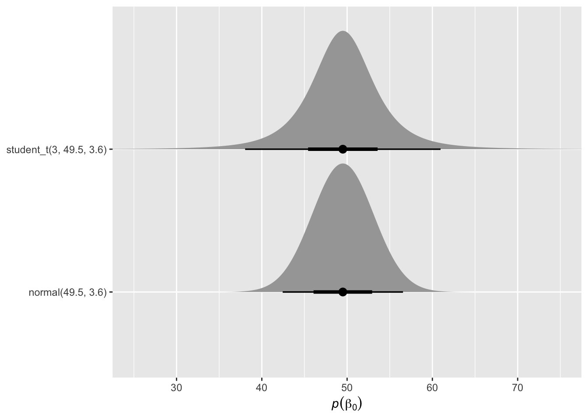
See how the \(\nu = 3\) parameter in the default prior produces much thicker tails than its Gaussian counterpart. We can make the same kind of plot for our default \(\sigma\) prior and its half-Gaussian counterpart.
Code
c(prior(student_t(3, 0, 3.6), lb = 0), # note our use of the lb = 0 argument
prior(normal(0, 3.6), lb = 0)) %>%
parse_dist() %>%
ggplot(aes(xdist = .dist_obj, y = prior)) +
stat_halfeye(point_interval = mean_qi, .width = c(.90, .99)) +
labs(x = expression(italic(p)(sigma)),
y = NULL) +
coord_cartesian(xlim = c(0, 30))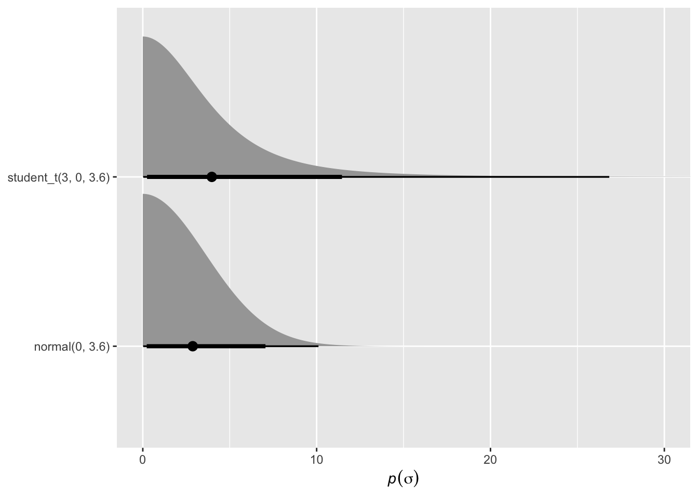
Here’s how we could have explicitly set our priors by hand.
Code
fit2.b <- brm(
data = chinstrap,
bill_length_mm ~ 1 + body_mass_g,
prior = prior(student_t(3, 49.5, 3.6), class = Intercept) +
prior(student_t(3, 0, 3.6), class = sigma, lb = 0)
)Compare the results.
Code
summary(fit1.b) Family: gaussian
Links: mu = identity
Formula: bill_length_mm ~ 1 + body_mass_g
Data: chinstrap (Number of observations: 68)
Draws: 4 chains, each with iter = 2000; warmup = 1000; thin = 1;
total post-warmup draws = 4000
Regression Coefficients:
Estimate Est.Error l-95% CI u-95% CI Rhat Bulk_ESS Tail_ESS
Intercept 32.19 3.50 25.20 39.02 1.00 5352 2971
body_mass_g 0.00 0.00 0.00 0.01 1.00 5391 3056
Further Distributional Parameters:
Estimate Est.Error l-95% CI u-95% CI Rhat Bulk_ESS Tail_ESS
sigma 2.92 0.26 2.47 3.49 1.00 1916 1553
Draws were sampled using sampling(NUTS). For each parameter, Bulk_ESS
and Tail_ESS are effective sample size measures, and Rhat is the potential
scale reduction factor on split chains (at convergence, Rhat = 1).Code
summary(fit2.b) Family: gaussian
Links: mu = identity
Formula: bill_length_mm ~ 1 + body_mass_g
Data: chinstrap (Number of observations: 68)
Draws: 4 chains, each with iter = 2000; warmup = 1000; thin = 1;
total post-warmup draws = 4000
Regression Coefficients:
Estimate Est.Error l-95% CI u-95% CI Rhat Bulk_ESS Tail_ESS
Intercept 32.18 3.50 25.31 39.08 1.00 4772 2744
body_mass_g 0.00 0.00 0.00 0.01 1.00 4733 2783
Further Distributional Parameters:
Estimate Est.Error l-95% CI u-95% CI Rhat Bulk_ESS Tail_ESS
sigma 2.92 0.25 2.47 3.45 1.00 2114 2180
Draws were sampled using sampling(NUTS). For each parameter, Bulk_ESS
and Tail_ESS are effective sample size measures, and Rhat is the potential
scale reduction factor on split chains (at convergence, Rhat = 1).Question 4.2
Compare the priors in fit1.b (default) and fit2.b (hand-set). Are they the same? If the results are nearly identical, what does that tell you?
Tip
Compare fit1.b$prior to the priors you set explicitly in fit2.b. Count the parameters — did you set a prior on all of them?
Code
# Enter your answer here
TipAnswer
The results are nearly identical because the explicit priors on the intercept and \(\sigma\) match what brms chose by default. The slope (\(\beta_1\)) still uses the default flat prior in both models — fit2.b didn’t set one explicitly, so brms filled it in. The lesson: brms always has priors, whether you set them or not.
If you want to learn more about the default prior settings for brms, read through the set_prior section of the brms reference manual (https://CRAN.R-project.org/package=brms/brms.pdf).
Model comparison with LOO-CV
In your MLM unit, you compared models with AIC and BIC. The Bayesian analog is Leave-One-Out Cross-Validation (LOO-CV).
The idea: hide one data point, fit the model on the remaining 67, and predict the held-out point. Repeat for every point. Models that predict held-out data well are capturing real structure; models that predict poorly are either too simple or fitting noise.
Rather than actually refitting the model 67 times, loo() approximates the cross-validation using your existing posterior draws. It estimates how much each data point influenced the fit. Points the model already predicts well had little influence; points that surprised the model — the ones that would have been flagged as unusual in a residual plot — had a lot. Averaging across all points gives you an overall score for how well the model predicts new data. So a model that is consistently unsurprised by held-out points gets a high score, and one that is frequently caught off guard gets a low one.
The key number in the output is ELPD (expected log pointwise predictive density). Higher ELPD = better out-of-sample prediction. When comparing two models, loo_compare() puts the better model on top and reports the difference with a standard error. A difference many times larger than its SE is reliable.
Code
loo0 <- loo(fit0.b)
loo1 <- loo(fit1.b)
loo_compare(loo0, loo1) elpd_diff se_diff
fit1.b 0.0 0.0
fit0.b -9.2 3.7 The first row is the better model. The elpd_diff column tells you how much better, and se_diff tells you how certain that difference is.
Question 4.3
The loo_compare() output shows that fit1.b has better predictive accuracy than fit0.b. In practical terms, what does this tell you about whether body_mass_g is a useful predictor of bill_length_mm?
Tip
The first row in loo_compare() is the better model. What does it mean for your research question if the predictor model wins?
Code
# Enter your answer hereExercise 3
In the previous lab, you made a subset of the penguins data called gentoo, which was only the cases for which species == "Gentoo". Do that again and refit the Bayesian model to those data.
- Subset the data to Gentoo penguins.
- Refit the Bayesian
brm()model on the Gentoo data. - Remake some of the figures from Part 3 with the new model.
Code
# Enter your code hereReferences
Gelman, A., Hill, J., & Vehtari, A. (2020). Regression and other stories. Cambridge University Press. https://doi.org/10.1017/9781139161879
Kruschke, J. K. (2015). Doing Bayesian data analysis: A tutorial with R, JAGS, and Stan. Academic Press. https://sites.google.com/site/doingbayesiandataanalysis/
McElreath, R. (2020). Statistical rethinking: A Bayesian course with examples in R and Stan (Second Edition). CRC Press. https://xcelab.net/rm/statistical-rethinking/
McElreath, R. (2015). Statistical rethinking: A Bayesian course with examples in R and Stan. CRC Press. https://xcelab.net/rm/statistical-rethinking/